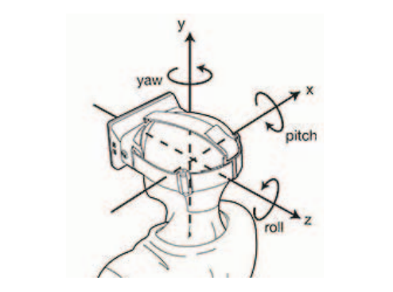
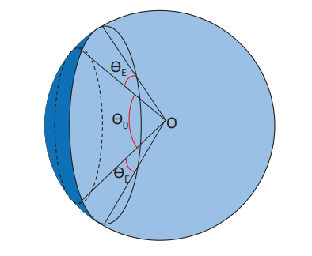

Motion Prediction
Based Transmission
The rapid development of Virtual Reality (VR) has led to a rise in 360-degree video content. A significant challenge facing VR development currently is the transmission of online content in realtime. This is because 360 video consumes at least 4-6 times the bandwidth of regular video with the same resolution. The cause of this large increase is the need to transmit the entire rendered 360 video sphere as well as the current viewpoint of the user on said sphere.
Yanan Bao et al propose a motion prediction based video transmission mechanism that predicts the viewer's next viewpoint. They claim that perfect predictions with ideal conditions results in a bandwidth reduction of 80%. Practically, this is unachievable due to the random nature of viewer head motion. Therefore, a machine learning tool predicts viewer motion as well as prediction deviation to achieve best results.
The bandwidth reduction is a result of the ability to only render the current viewpoint if it is known in advance. This is an optimization opportunity unique to 360 video. The idea is to predict the next viewpoint angle, and thus the next Field of View (FOV), and only transmit the respective FOV frame on the sphere. As mentioned above, the ideal scenario results in 80% of the sphere remaining unrendered, significantly reducing computation and bandwidth.
Viewpoint and Deviation Prediction Framework
Yanan Bao et al record the temporal pitch, yaw, and roll (X, Y, and Z) data of 153 subjects watching a selection of sixteen  360 video clips in VR. They generation 10 measurements per second, which was determined to be quick enough relative to normal head movements. The X, Y, and Z data are separated for input into the machine learning mechanism. A basic analysis of viewpoint movements show that for 90% of the time, the X, Y, and Z angles are within 15°, 35°, and 9° respectively of the previous viewpoint 0.2 seconds ago. This observation implicitly signifies that Z angle predictions will achieve higher accuracy than X and Y.
Viewpoint prediction is based on current and past rotation status. Yanan Bao et al input the temporal X, Y, and Z data into three separate regression models: Naive, Linear Regression (LE), and a Neural Network (NN). The Naive model is a control for comparison where the current angle is the next predicted angle. They use 50% of the data for training, 50% for testing. The sliding window ranges from 0.1-1.0 seconds. To determine the true accuracy of the above prediction, the deviation (viewpoint error) is also predicted using LE and a NN. A high deviation would require a higher FOV needing to be transmitted to cover up prediction errors.
As expected, the neural network achieves the most accurate results across all sliding windows. For example, with sliding windows of 0.1, 0.5, and 1.0, the NN mean viewpoint center prediction error and mean viewpoint deviation prediction error are respectively 0.92, 8.40, 18.13 and 0.68, 6.32, 13.48. A lower window clearly reduces error, but higher windows significantly reduce computation. Regardless, even a window of 0.1 seconds to predict the transmitted FOV is a remarkable reduction in computation in comparison to the typically used 90 frames per second of common VR hardware. Yanan Bao et al recommend sliding windows of 0.2 or 0.3 for best results.
Transmission Area
 The FOV transmitted to the user is a rectangular projected on the 360 sphere determined by the viewpoint and angle. Yanan Bao et al propose that if viewpoint prediction techniques are used, the transmission area of the sphere should be a round shape encompassing the viewpoint prediction (projected rectangle) and the deviation prediction. The sphere to the right shows an example of the render area of the sphere including the error prediction. The transmission is considered a failure if a single pixel in the viewer's FOV falls outside the predicted range.
Yanan Bao et al were able to attain an upper bound of 80.34% bandwidth reduction by transmitting 19.66% of the sphere. Real data based evaluations determined a typical 45% reduction with a failure rate of less than 0.1%, which is acceptable. These results indicate that this method can produce the same high quality 360 video experience with a large reduction in bandwidth.
Further Reading: Shooting a Moving Target: Motion-Prediction-Based Transmission for 360-Degree Videos